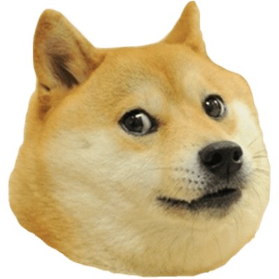

Since Prepa 5
Gracias por extenderme tu amistad y rolar la tarea, por darme afecto cálido y único, no sabía que duraría tanto y seria tan bomnito. Estar contigo fue de lo más bonito en prepa.
Universitát Friendship
Mi amiga y compañera de aventuras, gracias por acompañarme y llevarme de aqui para allá, comiendo, probando, leyendo y viendo todo el mundo junto a ti.
Nadie como tú, mi vida
¿Te he dicho lo hermosa que eres? Antes de todo esto, nunca pude ocultar mi alegría por verte, tan bonita, tan única, tan especial. Eres la mujer más bonita del mundo mundial.
Feelings en desborde...
Esta foto es de mis favoritas del concierto, ya que en este punto tenía sentimientos por ti pero tenía miedo de que no fuera correspondido. Además, me gustaba mucho nuestra amistad.
Mi tiempo contigo
Me encantaba darte de mi tiempo. Salir contigo, ir a comer, explorar sitios donde nunca habia estado, mi tiempo contigo es simplemente unico, no lo cambiaría por nada. A la par lo que sentía por ti solo iba creciendo, tú ya lo sabías.
So much recuerdos
Hay muchas cosas por las cuales me gustas, las pequeñas locuras, los chistes buenos y malos, las palabras bonitas y las aventuras en duo contigo, solo hacían que brillaras más frente a mi mirada.
Y cómo no enamorarme
¿Cómo no enamorarme con tremenda belleza? de una personalidad tan inteligente, tan bella, tan linda y tierna. Había visto belleza en otras ocasiones, pero nada comparado contigo.
Primeros pasos...
Después de un mágico beso en tu cumpleaños y un par de confesiones bonitas, parecíamos listos para emprender una relación. Creo que a ambos nos daba mucha amsiedad eso, pero valio la pena ir "paso a pasito".
Lo que quiero...
Y sin sonar egoísta, es poder tener una vida contigo mi amor. Me gusta el pasar de mis días contigo y quiero hacer que dure. Si me lo permites, me gustaria sujetar tu mano por muchos años más...